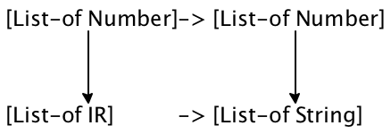
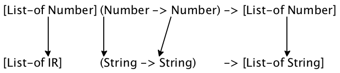
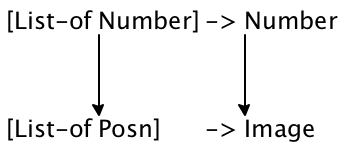
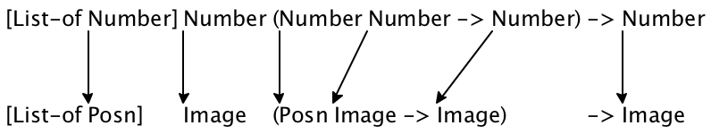

III Abstraction
Many of our data definitions and function definitions look alike. For example, the definition for a list of Strings differs from that of a list of Numbers in only two places: the names of the classes of data and the words “String” and “Number.” Similarly, a function that looks for a specific string in a list of Strings is nearly indistinguishable from one that looks for a specific number in a list of Numbers.
Experience shows that these kinds of similarities are problematic. The
similarities come about because programmers—
Good programmers try to eliminate similarities as much as the programming language allows.A program is like an essay. The first version is a draft, and drafts demand editing. “Eliminate” implies that programmers write down their first drafts of programs, spot similarities (and other problems), and get rid of them. For the last step, they either abstract or use existing (abstract) functions. It often takes several iterations of this process to get the program into satisfactory shape.
The first half of this part shows how to abstract over similarities in functions and data definitions. Programmers also refer to the result of this process as an abstraction, conflating the name of the process and its result. The second half is about the use of existing abstractions and new language elements to facilitate this process. While the examples in this part are taken from the realm of lists, the ideas are universally applicable.
16 Similarities Everywhere
If you have solved only a fraction of the exercises in Arbitrarily Large Data, you know that the solutions look alike. As a matter of fact, the similarities may tempt you to copy the solution of one problem to create the solution for another one. But thou shall not steal code, not even your own. Instead, you must abstract over similar pieces of code and this chapter teaches you how to abstract.
Our means of avoiding similarities are specific to “Intermediate Student Language” or ISL for short. In DrRacket, choose “Intermediate Student Language” from the “How to Design Programs” submenu in the “Language” menu. Almost all other programming languages provide similar means; in object-oriented languages you may find additional abstraction mechanisms. Regardless, these mechanisms share the basic characteristics spelled out in this chapter, and thus the design ideas explained here apply in other contexts, too.
16.1 Similarities in Functions
The design recipe determines a function’s basic organization because the template is created from the data definition without regard to the purpose of the function. Not surprisingly then, functions that consume the same kind of data look alike.
; Los -> Boolean ; does l contain "dog" (define (contains-dog? l) (cond [(empty? l) #false] [else (or (string=? (first l) "dog") (contains-dog? (rest l)))]))
; Los -> Boolean ; does l contain "cat" (define (contains-cat? l) (cond [(empty? l) #false] [else (or (string=? (first l) "cat") (contains-cat? (rest l)))]))
Consider the two functions in figure 52, which consume lists of strings and look for specific strings. The function on the left looks for "dog", the one on the right for "cat". The two functions are nearly indistinguishable. Each consumes lists of strings; each function body consists of a cond expressions with two clauses. Each produces #false if the input is '(); each uses an or expressions to determine whether the first item is the desired item and, if not, uses recursion to look in the rest of the list. The only difference is the string that is used in the comparison of the nested cond expressions: contains-dog? uses "dog" and contains-cat? uses "cat". To highlight the differences, the two strings are shaded.
; String Los -> Boolean ; determines whether l contains the string s (define (contains? s l) (cond [(empty? l) #false] [else (or (string=? (first l) s) (contains? s (rest l)))]))
; Los -> Boolean ; does l contain "dog" (define (contains-dog? l) (contains? "dog" l))
; Los -> Boolean ; does l contain "cat" (define (contains-cat? l) (contains? "cat" l))
Computing borrows the term “abstract” from mathematics. A mathematician refers to “6” as an abstract number because it only represents all different ways of naming six things. In contrast, “6 inches” or “6 eggs” are concrete instances of “6” because they express a measurement and a count. What you have just seen is called functional abstraction. Abstracting different versions of functions is one way to eliminate similarities from programs, and as you can see with this one simple example, doing so simplifies programs.
Exercise 205. Use contains? to define functions that search for "atom", "basic", and "zoo", respectively.
; Lon -> Lon ; add 1 to each number on l (define (add1* l) (cond [(empty? l) '()] [else (cons (add1 (first l)) (add1* (rest l)))]))
; Lon -> Lon ; adds 5 to each number on l (define (plus5 l) (cond [(empty? l) '()] [else (cons (+ (first l) 5) (plus5 (rest l)))])) Then abstract over them. Define the above two functions in terms of the abstraction as one-liners and use the existing test suites to confirm that the revised definitions work properly. Finally, design a function that subtracts 2 from each number on a given list.
16.2 More Similarities in Functions
Abstraction looks easy in the case of contains-dog? and contains-cat?. It takes only a comparison of two function definitions, a replacement of a literal string with a function parameter, and a quick check that it is easy to define the old functions with the abstract function. This kind of abstraction is so natural that it showed up in the preceding two parts of the book without much ado.
This section illustrates how the very same principle yields a powerful form of abstraction. Take a look at figure 54. Both functions consume a list of numbers and a threshold. The left one produces a list of all those numbers that are below the threshold, while the one on the right produces all those that are above the threshold.
; Lon Number -> Lon ; constructs the list of numbers from ; those on l that are below t (define (small l t) (cond [(empty? l) '()] [else (cond [(< (first l) t) (cons (first l) (small (rest l) t))] [else (small (rest l) t)])]))
; Lon Number -> Lon ; constructs the list of numbers from ; those on l that are above t (define (large l t) (cond [(empty? l) '()] [else (cond [(> (first l) t) (cons (first l) (large (rest l) t))] [else (large (rest l) t)])]))
The two functions different in only one place: the comparison operator that determines whether a number from the given list should be a part of the result or not. The function on the left uses <, the right one >. Other than that, the two functions look identical, not counting the function name.
(define (extract R l t) (cond [(empty? l) '()] [else (cond [(R (first l) t) (cons (first l) (extract R (rest l) t))] [else (extract R (rest l) t)])]))
Stop! At this point you should ask whether this definition makes any
sense. Without further ado, we have created a function that consumes a
function—
(extract < (cons 4 '()) 5) = (cond [(empty? (cons 4 '())) '()] [else (cond [(< (first (cons 4 '())) 5) (cons (first (cons 4 '())) (extract < (rest (cons 4 '())) 5))] [else (extract < (rest (cons 4 '())) 5)])])
(cond [(empty? (cons 4 '())) '()] [else (cond [(< (first (cons 4 '())) 5) (cons (first (cons 4 '())) (extract < (rest (cons 4 '())) 5))] [else (extract < (rest (cons 4 '())) 5)])]) = (cond [#false '()] [else (cond [(< (first (cons 4 '())) 5) (cons (first (cons 4 '())) (extract < (rest (cons 4 '())) 5))] [else (extract < (rest (cons 4 '())) 5)])]) = (cond [(< (first (cons 4 '())) 5) (cons (first (cons 4 '())) (extract < (rest (cons 4 '())) 5))] [else (extract < (rest (cons 4 '())) 5)]) = (cond [(< 4 5) (cons (first (cons 4 '())) (extract < (rest (cons 4 '())) 5))] [else (extract < (rest (cons 4 '())) 5)]) = (cond [#true (cons (first (cons 4 '())) (extract < (rest (cons 4 '())) 5))] [else (extract < (rest (cons 4 '())) 5)]) = (cons 4 (extract < (rest (cons 4 '())) 5)) = (cons 4 (extract < '() 5)) = (cons 4 '())
(extract < (cons 6 (cons 4 '())) 5) = (extract < (cons 4 '()) 5) = (cons 4 (extract < '() 5)) = (cons 4 '())
by hand. Show every step.
by hand. Show the new steps, rely on prior calculations where possible.
|
|
; Number Number -> Boolean ; is the area of a square with side x larger than c (define (squared>? x c) (> (* x x) c))
(extract squared>? (list 3 4 5) 10)
Exercise 209. Evaluate (squared>? 3 10), (squared>? 4 10), and (squared>? 5 10) by hand. Then show that(extract squared>? (list 3 4 5) 10)
So far you have seen that abstracted function definitions can be more useful than the functions you start from. For example, contains? is more useful than contains-dog? and contains-cat?, and extract is more useful than small and large. These effects of abstraction are crucial for large, industrial programming projects. For that reason, programming language and software engineering research has focused on how to create single points of control in large projects. Of course, the same idea applies to all kinds of computer designs (word documents, spread sheets) and organizations in general. Another important aspect of abstraction is that you now have a single point of control over all these functions. If it turns out that the abstract function contains a mistake, fixing its definition suffices to fix all other definitions. Similarly, if you figure out how to accelerate the computations of the abstract function or how to reduce its energy consumption, then all functions defined in terms of this function are improved without further ado. The following exercises indicate how these single-point-of-control improvements work.
; Nelon -> Number ; determines the smallest ; number on l (define (inf l) (cond [(empty? (rest l)) (first l)] [else (cond [(< (first l) (inf (rest l))) (first l)] [else (inf (rest l))])]))
; Nelon -> Number ; determines the largest ; number on l (define (sup l) (cond [(empty? (rest l)) (first l)] [else (cond [(> (first l) (sup (rest l))) (first l)] [else (sup (rest l))])])) Both consume non-empty lists of numbers (Nelon) and produce a single number. The left one produces the smallest number in the list, the right one the largest.Define inf-1 and sup-1 in terms of the abstract function. Test each of them with these two lists:
(list 25 24 23 22 21 20 19 18 17 16 15 14 13 12 11 10 9 8 7 6 5 4 3 2 1) (list 1 2 3 4 5 6 7 8 9 10 11 12 13 14 15 16 17 18 19 20 21 22 23 24 25) Why are these functions slow on some of the long lists?Modify the original functions with the use of max, which picks the larger of two numbers, and min, which picks the smaller one. Then abstract again, define inf-2 and sup-2, and test them with the same inputs again. Why are these versions so much faster?
For a complete answer to the two questions on performance, see Local Function Definitions.
16.3 Similarities in Data Definitions
|
|
[List-of Number] says that ITEM represents all numbers so the notation is just another name for List-of-numbers;
[List-of String] defines the same class of data as List-of-String; and
- if we had identified a class of inventory records, like this:
(define-struct ir [name price]) ; An IR is ; (make-ir String Number)
(define-struct point [hori veri])
|
|
To instantiate a data definition with two parameters, you need two names of data collections. Using Number and Image for the parameters of CP, you get [CP Number Image], which describes the collections of points that combine a number with an image. In contrast [CP Boolean String] combines Boolean values with strings in a point structure.
; A Nested-string is one of: ; – String ; – (make-layer Nested-string)
; A Nested-number is one of: ; – Number ; – (make-layer Nested-number) Both data definitions exploit this structure type definition:(define-struct layer [stuff])
Both define nested forms of data’ one is about numbers and the other about strings. Make examples for both. Abstract over the two. Then instantiate the abstract definition to get back the originals.
; A [Bucket ITEM] is ; (make-bucket N [List-of ITEM]) ; interpretation the n in (make-bucket n l) is the length of l ; i.e., (= (length l) n) is always true When you instantiate Bucket with String, IR, and Posn, you get three different data collections. Describe each of them with a sentence and with two distinct examples.Now consider this instantiations:Construct three distinct pieces of data that belong to this collection.
Interpret the following data definitions:What does the following function signature mean:
; String [List-of String] -> [Maybe [List-of String]] ; returns the remainder of the list los if it contains s ; #false otherwise (check-expect (occurs "a" (list "b" "a" "d")) (list "d")) (check-expect (occurs "a" (list "b" "c" "d")) #f) (define (occurs s los) los) Design the function.
16.4 Functions Are Values
The functions of this section stretch our understanding of program evaluation. It is easy to understand how functions consume more than numbers, say strings, images, and Boolean values. Structures and lists are a bit of a stretch, but they are finite “things” in the end. Function-consuming functions, however, are strange. Indeed, these kind of functions violate the BSL grammar of the first intermezzo in two ways. First, the names of primitive operations and functions are used as arguments in applications. Second, parameters are used as if they were functions, that is, the first position of applications.
Spelling out the problem tells you how the ISL grammar differs from BSL’s. First, our expression language should include the names of functions and primitive operations in the definition. Second, the first position in an application should allow things other than function names and primitive operations; at a minimum, it must allow variables and function parameters. In anticipation of other uses of functions, we agree on allowing arbitrary expressions in that position.
The changes to the grammar seem to demand changes to the evaluation rules, but they don’t change at all. All that changes is the set of values. To accommodate functions as arguments of functions, the simplest change is to say that functions are values. Thus, we start using the names of functions and primitive operations as values; later we introduce another way to deal with functions as values.
Exercise 214. Assume the definitions area in DrRacket contains (define (f x) x). Identify the values among the following expressions:Explain why they are values and why the remaining expressions are not values.
Explain your reasoning.
Exercise 216. Develop function=at-1.2-3-and-5.775?. The function determines whether two functions from numbers to numbers produce the same results for 1.2, 3, and -5.775.
Mathematicians say that two functions are equal if they compute the same result when given the same input—
for all possible inputs. Can we hope to define function=?, which determines whether two functions from numbers to numbers are equal f? If so, define the function. If not, explain why and consider the implication that you have encountered the first easily definable idea for which you cannot define a function.
17 Designing Abstractions
In essence, to abstract is to turn something concrete into a parameter. We have this several times in the preceding section. To abstract similar function definitions, you add parameters that replace concrete values in the definition. To abstract similar data definitions, you create parametric data definitions. When you will encounter other programming languages, you will see that their abstraction mechanisms also require the introduction of parameters, though they may not be function parameters.
17.1 Abstractions from Examples
When you first learned to add, you worked with concrete examples. Your parents probably taught you to use your fingers to add two small numbers. Later on, you studied how to add two arbitrary numbers; you were introduced to your first kind of abstraction. Much later still, you learned to formulate expressions that convert temperatures from Celsius to Fahrenheit or calculate the distance that a car travels at a certain speed in a given amount of time. In short, you went from very concrete examples to abstract relations.
This section introduces a design recipe for creating abstractions from examples. As the preceding section shows, creating abstractions is easy. We leave the difficult part to the next section where we show you how to find and use existing abstractions.
Step 1 is to compare two items for similarities.
When you find two function definitions that are almost the same except for their namesThe recipe requires a substantial modification for abstracting over non-values. and some values at a few analogous places, compare them, mark the differences. If the two definitions differ in more than one place, connect the corresponding differences with a line or a comment.
Here is a pair of similar function definitions:; List-of-numbers -> List-of-numbers ; converts a list of Celsius ; temperatures to Fahrenheit (define (cf* l) (cond [(empty? l) '()] [else (cons (C2F (first l)) (cf* (rest l)))])) ; Inventory -> List-of-strings ; extracts the names of toys ; from an inventory (define (names i) (cond [(empty? i) '()] [else (cons (IR-name (first i)) (names (rest i)))])) ; ; Number -> Number ; converts one Celsius ; temperature to Fahrenheit (define (C2F c) (+ (* 9/5 c) 32)) ; (define-struct IR [name price]) ; An IR is (make-IR String Number) ; An Inventory is one of: ; – '() ; – (cons IR Inventory) The two functions apply a function to each item in a list. They differ only as to which function they apply to each item. The two highlights emphasize this essential difference. They also differ in two inessential ways: the names of the function and the names of the parameters.
Next we abstract. To abstract means to replace the contents of corresponding code highlights with new names and add these names to the parameter list. For our running example, we obtain the following pair of functions after replacing the differences with g:
(define (cf* l g) (cond [(empty? l) '()] [else (cons (g (first l)) (cf* (rest l) g))])) (define (names i g) (cond [(empty? i) '()] [else (cons (g (first i)) (names (rest i) g))])) This first change eliminates the essential difference. Now each function traverses a list and applies some given function to each item.The inessential differences—
the names of the functions and occasionally the names of some parameters— are easy to eliminate. Indeed, if you have explored DrRacket, you know that check syntax allows you to do this systematically and easily: (define (map1 k g) (cond [(empty? k) '()] [else (cons (g (first k)) (map1 (rest k) g))])) (define (map1 k g) (cond [(empty? k) '()] [else (cons (g (first k)) (map1 (rest k) g))])) We choose to use map1 for the name of the function and k for the name of the list parameter. No matter which names you choose, the result is two identical function definitions.Our example is simple. In many cases, you will find that there is more than just one pair of differences. The key is to find pairs of differences. When you mark up the differences on paper and pencil, connect related boxes with a line. Then introduce one additional parameter per line. And don’t forget to change all recursive uses of the function so that the additional parameters go along for the ride.
Now we must validate that the new function is a correct abstraction of the original pair of functions. To validate means to test, which here means to define the two original functions in terms of the abstraction.
Thus suppose that one original function is called f-original and consumes one argument and that the abstract function is called abstract. If f-original differs from the other concrete function in the use of one value, say, val, the following function definition(define (f-from-abstract x) (abstract x val)) introduces the function f-from-abstract, which should be equivalent to f-original. That is, for every proper value V, (f-from-abstract V) should produce the same answer as (f-original V). This is particularly true for all values that your tests for f-original use. So re-formulate and re-run those tests for f-from-abstract and make sure they succeed.Let us return to our running example:; List-of-numbers -> List-of-numbers (define (cf*-from-map1 l) (map1 l C2F)) ; Inventory -> List-of-strings (define (names-from-map1 i) (map1 i IR-name)) A complete example would include some tests, and thus we can assume that both cf* and names come with some tests:(check-expect (cf* (list 100 0 -40)) (list 212 32 -40)) (check-expect (names (list (make-IR "doll" 21.0) (make-IR "bear" 13.0))) (list "doll" "bear")) To ensure that the functions defined in terms of map1 work properly, you can copy the tests and change the function names appropriately:(check-expect (cf*-from-map1 (list 100 0 -40)) (list 212 32 -40)) (check-expect (names-from-map1 (list (make-IR "doll" 21.0) (make-IR "bear" 13.0))) (list "doll" "bear")) To make a new abstraction useful, it needs a signature. As Using Abstractions explains, reuse of abstract functions start with their signatures. Finding useful signatures is, however, a serious problem. For now we just use the running example to illustrate the problem. Similarities in Signatures below resolves the issue.
So consider the problem of finding a signature for map1. On the one hand, if you view map1 as an abstraction of cf*, you might think the signature is; List-of-numbers [Number -> Number] -> List-of-numbers
That is, the original signature extended with one signature for functions:Since the additional parameter for map1 is a function, the use of a function signature shouldn’t surprise you. This function signature is also quite simple; it is a “name” for all the functions from numbers to numbers. Here C2F is such a function, and so are add1, sin, and imag-part.On the other hand, if you view map1 as an abstraction of names, the signature is quite different:; Inventory [IR -> String] -> List-of-strings
This time the additional parameter is IR-name, which is a selector function that consumes IRs and produces Strings. But clearly this second signature would be useless in the first case, and vice versa. To accommodate both cases, the signature for map1 must express that Number, IR, and String are coincidental.Also concerning signatures, you are probably eager to use List-of by now. It is clearly easier to write [List-of IR] than spelling out a data definition for Inventory. So yes, as of now, we use List-of when it is all about lists and you should too.
; List-of-numbers -> List-of-numbers (define (add1-to-each l) (map1 add1 l))
; Number -> [List-of Number] ; tabulates sin between n ; and 0 (inclusive) in a list (define (tab-sin n) (cond [(= n 0) (list (sin 0))] [else (cons (sin n) (tab-sin (sub1 n)))]))
; Number -> [List-of Number] ; tabulates sqrt between n ; and 0 (inclusive) in a list (define (tab-sqrt n) (cond [(= n 0) (list (sqrt 0))] [else (cons (sqrt n) (tab-sqrt (sub1 n)))]))
; [List-of Number] -> Number ; computes the sum of ; the numbers on l (define (sum l) (cond [(empty? l) 0] [else (+ (first l) (sum (rest l)))]))
; [List-of Number] -> Number ; computes the product of ; the numbers on l (define (product l) (cond [(empty? l) 1] [else (* (first l) (product (rest l)))]))
; [List-of Number] -> Number (define (product l) (cond [(empty? l) 1] [else (* (first l) (product (rest l)))]))
; [List-of Posn] -> Image (define (image* l) (cond [(empty? l) emt] [else (place-dot (first l) (image* (rest l)))])) ; Posn Image -> Image (define (place-dot p img) (place-image dot (posn-x p) (posn-y p) img)) ; graphical constants: (define emt (empty-scene 100 100)) (define dot (circle 3 "solid" "red")) Compare this exercise with exercise 218. Even though both involve the product function, this exercise poses an additional challenge because the second function, image*, consumes a list of Posns and produces an Image. Still, the solution is within reach of the material in this section, and it is especially worth comparing the solution with the one to the preceding exercise. The comparison yields interesting insights into abstract signatures.
Last but not least, when you are dealing with data definitions, the abstraction process proceed in an analogous manner. The extra parameters to data definitions stands for collections of values, and testing means spelling out a data definition for some concrete examples. All in all, abstracting over data definitions tends to be easier than abstracting over functions, and so we leave it to you to adapt the design recipe appropriately.
17.2 Similarities in Signatures
As it turns out, a function’s signature is key to its reuse. Thus, to
increase the usefulness of an abstract function, you must learn to
formulate signatures that describes abstracts in their most general terms
possible. To understand how this works, we start with a second look at
signatures and from the simple—
In general, the arrow notation of signatures is like the
List-of notation from Similarities in Data Definitions.
The latter consumes (the name of) one class of data, say X, and describes
all lists of X items—
What this means is that the abstraction design recipe applies to signatures, too. You compare similar signatures; you highlight the differences; and then you replace those with parameters. But the process of abstracting signatures feels more complicated than the one for functions, partly because signature are already abstract pieces of the design recipe and partly because the arrow-based notation is much more complex than anything else we have encountered.


Since listing the parameters of a signature is extra work for our purposes, we simply say that from now on all variables in signatures as parameters. Other programming languages, however, insist on explicitly listing the parameters of signatures, but in return you can articulate additional constraints in such signatures and the signatures are checked before you run the program.
both signatures describe one-argument functions;
both argument descriptions employ the List-of construction;

To make more progress on a signature for the abstraction of the two functions in exercise 219, we need to take the first two steps of the design recipe:
|
|

; [List-of X] Y [X Y -> Y] -> Y
Given two similar function definitions, f and g, compare their signatures for similarities and differences. The goal is to discover the organization of the signature and to mark the places where one signature differs from the other. Connect the differences as pairs just like you do when you analyze function bodies.
Abstract f and g into f-abs and g-abs. That is, add parameters that eliminate the differences between f and g. Create signatures for f-abs and g-abs. Keep in mind what the new parameters originally stood for; this helps you figure out the new pieces of the signatures.
Check whether the analysis of step 1 extends to the signatures of f-abs and g-abs. If so, replace the differences with variables that range over classes of data. Once the two signatures are the same you have a signature for the abstracted function.
- Test the abstract signature in two ways. First, ensure that suitable substitutions of the variables in the abstract signature yield the signatures of f-abs and g-abs. Second, check that the generalized signature is in sync with the code. For example, if p is a new parameter and its signature is
; ... [A B -> C] ....
then p should always be applied to two arguments, the first one from A and the second one from B. And the result of an application of p is going to be a C and should be used where elements of C are expected.
; [Number -> Boolean] ; [Boolean String -> Boolean] ; [Number Number Number -> Number] ; [Number -> [List-of Number]] ; [[List-of Number] -> Boolean] Describe these collections with at least one example from ISL.
sort-n, which consumes a list of numbers and a function that consumes two numbers (from the list) and produces a Boolean; sort-n produces a sorted list of numbers.
sort-s, which consumes a list of strings and a function that consumes two strings (from the list) and produces a Boolean; sort-s produces a sorted list of strings.
Then abstract over the two signatures, following the above steps. Also show that the generalized signature can be instantiated to describe the signature of a sort function for lists of IRs.
map-n, which consumes a list of numbers and a function from numbers to numbers to produce a list of numbers.
map-s, which consumes a list of strings and a function from strings to strings and produces a list of strings.
Then abstract over the two signatures, following the above steps. Also show that the generalized signature can be instantiated to describe the signature of the map-IR function above.
17.3 Single Point of Control
In general, programs are like drafts of papers. Editing drafts is important to correct typos, to fix grammatical mistakes, to make the document consistent, and to eliminate repetitions. Nobody wants to read papers that repeat themselves a lot, and nobody wants to read such programs either.
The elimination of similarities in favor of abstractions has many advantages. Creating an abstraction simplifies definitions. It may also uncover problems with existing functions, especially when similarities aren’t quite right. But, the single most important advantage is the creation of single points of control for some common functionality.
Putting the definition for some functionality in one place makes it easy to maintain a program. When you discover a mistake, you have to go to just one place to fix it. When you discover that the code should deal with another form of data, you can add the code to just one place. When you figure out an improvement, one change improves all uses of the functionality. If you had made copies of the functions or code in general, you would have to find all copies and fix them; otherwise the mistake might live on or the only one of the functions would run faster.
We therefore formulate this guideline:
Creating Abstractions: Form an abstraction instead of copying and modifying any piece of a program.
Our design recipe for abstracting functions is the most basic tool to create abstractions. To use it requires practice. As you practice, you expand your capabilities to read, organize, and maintain programs. The best programmers are those who actively edit their programs to build new abstractions so that they collect things related to a task at a single point. Here we use functional abstraction to study this practice; in other courses on programming, you will encounter other forms of abstraction, most importantly inheritance in class-based object-oriented languages.
17.4 Abstractions from Templates
Over the course of the first two chapters, we have designed many functions using the same template. After all, the design recipe says to organize functions around the organization of the (major) input data definition. It is therefore not surprising that many function definitions look similar to each other.
; [List-of X] Y [X Y -> Y] -> Y (define (reduce l base combine) (cond [(empty? l) base] [else (combine (first l) (reduce (rest l) base combine))]))
|
|
18 Using Abstractions
Many programming languages provide a number of looping constructs, or loop for short. A loop processes a compound piece of data, one piece at a time. In our terminology a loop abstracts over the traversal of data and applies some given function to each of its pieces. You have encountered several such loops in the first two sections of this chapter: extract, fold1, map1, etc. These functions consume a function and apply it to each item on some list.
Once you have such loop abstractions, you should use them when possible. They create single points of control data, and they are a work-saving device. To make this precise, the use of an abstraction helps the reader of your code to understand your intentions, in particular if the abstraction is well-known and built into the language or comes with its standard libraries.
This chapter is all about the reuse of existing ISL abstractions. It starts with a section on existing ISL abstractions, some of which you have seen under false names. The remaining sections are about re-using such abstractions. One key ingredient is a new syntactic construct, local, for defining functions and variables (and even structure types) locally within a function. An auxiliary ingredient, introduced in the last section, is the lambda construct for creating nameless functions; lambda is a convenience but inessential to the idea of re-using abstract functions.
; N [N -> X] -> [List-of X] ; constructs a list by applying f to 0, 1, ..., (sub1 n) ; (build-list n f) = (list (f 0) ... (f (- n 1))) (define (build-list n f) ...) ; [X -> Boolean] [List-of X] -> [List-of X] ; produces a list from all those items on alox for which p holds (define (filter p alox) ...) ; [List-of X] [X X -> Boolean] -> [List-of X] ; produces a version of alox that is sorted according to cmp (define (sort alox cmp) ...) ; [X -> Y] [List-of X] -> [List-of Y] ; constructs a list by applying f to each item on alox ; (map f (list x-1 ... x-n)) = (list (f x-1) ... (f x-n)) (define (map f alox) ...) ; [X -> Boolean] [List-of X] -> Boolean ; determines whether p holds for every item on alox ; (andmap p (list x-1 ... x-n)) = (and (p x-1) ... (p x-n)) (define (andmap p alox) ...) ; [X -> Boolean] [List-of X] -> Boolean ; determines whether p holds for at least one item on alox ; (ormap p (list x-1 ... x-n)) = (or (p x-1) ... (p x-n)) (define (ormap p alox) ...) ; [X Y -> Y] Y [List-of X] -> Y ; applies f from right to left to each item in alox and base ; (foldr f base (list x-1 ... x-n)) = (f x-1 ... (f x-n base)) (define (foldr f base alox) ...) ; [X Y -> Y] Y [List-of X] -> Y ; applies f from left to right to each item in alox and base ; (foldl f base (list x-1 ... x-n)) = (f x-n ... (f x-1 base)) (define (foldl f base alox) ...) ; [X -> Number] [List-of X] -> X ; finds the (first) item in alox that maximizes f, that is: ; if (argmax f (list x-1 ... x-n)) = x-i, ; then (>= (f x-i) (f x-1)), (>= (f x-i) (f x-2)), and so on (define (argmax f alox) ...) ; [X -> Number] [List-of X] -> X ; finds the (first) item in alox that minimizes f, that is: ; if (argmin f (list x-1 ... x-n)) = x-i, ; then (<= (f x-i) (f x-1)), (<= (f x-i) (f x-2)), and so on (define (argmin f alox) ...)
18.1 Existing Abstractions
> (build-list 3 add1) (list 1 2 3)
> (filter odd? (list 1 2 3 4 5)) (list 1 3 5)
> (sort (list 3 2 1 4 5) >) (list 5 4 3 2 1)
> (map add1 (list 1 2 2 3 3 3)) (list 2 3 3 4 4 4)
|
|
(define-struct address [first-name last-name street]) ; Addr is (make-address String String String) ; interpretation associates a street address with a person's name ; [List-of Addr] -> String ; creates a string of first names, sorted in alphabetical order, ; separated and surrounded by blank spaces (define (listing l) (foldr string-append-with-space " " (sort (map address-first-name l) string<?))) ; String String -> String ; concatenates two strings and prefixes with space (define (string-append-with-space s t) (string-append " " s t)) (define ex0 (list (make-address "Matthias" "Fellson" "Sunburst") (make-address "Robert" "Findler" "South") (make-address "Matthew" "Flatt" "Canyon") (make-address "Shriram" "Krishna" "Yellow"))) (check-expect (listing ex0) " Matthew Matthias Robert Shriram ")
Figure 56 illustrates the power of composing the functions from figure 55. Its main function is listing. The purpose is to create a string from a list of addresses. More precisely, the expected result is a string that represents a sorted list of first names, separated and surrounded by blank spaces.
design a function that extracts the first names from the given list of Addr;
design a function that sorts these names in alphabetical order;
design a function that concatenates the strings from step 2.
(map address-first-name l)
Exercise 223. You can design build-list and foldl with the design recipes that you know, but they are not going to be like the ones that ISL provides. For example, the design of your own foldl function requires a use of the list reverse function:
; [X Y -> Y] Y [List-of X] -> Y ; my-foldl works just like foldl (check-expect (my-foldl cons '() '(a b c)) (foldl cons '() '(a b c))) (check-expect (my-foldl / 1 '(6 3 2)) (foldl / 1 '(6 3 2))) (define (my-foldl f e l) (foldr f e (reverse l))) Design my-build-list, which works just like build-list. Hint Recall the add-at-end function from exercise 177. Note Accumulators covers the concepts that you need to design these functions properly.
18.2 Local Function Definitions
Take a second look at figure 56. The string-append-with-space function clearly plays a subordinate role and has no use outside of this narrow context. Almost all programming languages support some way for stating this relationship as a part of the program. The idea is called a local definition, sometimes also a private definition. In ISL, local expressions introduce locally defined functions, variables, and structure types, and this section introduces the mechanics of local.
; [List-of Addr] -> String ; creates a string of first names, sorted in alphabetical order, ; separated and surrounded by blank spaces (define (listing.v2 l) (local (; String String -> String ; concatenates two strings and prefixes with space (define (string-append-with-space s t) (string-append " " s t))) ; — IN — (foldr string-append-with-space " " (sort (map address-first-name l) string<?))))
In this example, the sequence of definitions consists of a single function definition, the one for string-append-with-space. The body of local is the body of the original listing function. Its reference to string-append-with-space is now resolved locally, that is, there is no need to look in the global sequence of definitions. Conversely, outside of the local expression, it is impossible to refer to string-append-with-space. Since there is no such reference in the original program, it remains intact and you can confirm this with the test suite.
; [List-of Number] [Number Number -> Boolean] -> [List-of Number] (define (sort-cmp alon0 cmp) (local (; [List-of Number] -> [List-of Number] ; produces a variant of alon sorted by cmp (define (isort alon) (cond [(empty? alon) '()] [else (insert (first alon) (isort (rest alon)))])) ; Number [List-of Number] -> [List-of Number] ; inserts n into the sorted list of numbers alon (define (insert n alon) (cond [(empty? alon) (cons n '())] [else (if (cmp n (first alon)) (cons n alon) (cons (first alon) (insert n (rest alon))))]))) (isort alon0)))
(define (listing.v3 l) (local (; String String -> String ; concatenates two strings and prefixes with space (define (string-append-with-space s t) (string-append " " s t)) (define first-names (map address-first-name l)) (define sorted-names (sort first-names string<?))) ; — IN — (foldr string-append-with-space " " sorted-names)))
For a second example, consider figure 57. The organization of this definition tells the reader that sort-cmp needs two auxiliary functions: isort and insert. Note the reference to cmp in the latter, which tells the reader that the comparison function remains the same for the entire sorting process.
By making insert local, it also becomes impossible to abuse
insert. Re-read its purpose statement. The adjective “sorted”
means that a program should use insert only if the second
argument is already sorted. As long as insert is defined at the
top-level, nothing guarantees that insert is always used
properly. Once its definition is local to the sort-cmp function,
the proper use is guaranteed—
Exercise 224. Use a local expression to organize the functions for drawing a polygon in figure 46. If a globally defined functions is widely useful, do not make it local.
Exercise 225. Use a local expression to organize the functions for rearranging words from Word Games, the Heart of the Problem.
; Nelon -> Number ; determines the smallest number on l (define (inf l) (cond [(empty? (rest l)) (first l)] [else (local ((define smallest-in-rest (inf (rest l)))) (cond [(< (first l) smallest-in-rest) (first l)] [else smallest-in-rest]))]))
; Lon -> Lon ; constructs a list from the items in l in descending order (define (sort> l0) (local (; Lon -> Lon (define (sort l) (cond [(empty? l) '()] [else (insert (first l) (sort (rest l)))])) ; Number Lon -> Lon (define (insert an l) (cond [(empty? l) (list an)] [else (cond [(> an (first l)) (cons an l)] [else (cons (first l) (insert an (rest l)))])]))) (sort l0))) Create a test suite for sort>.Design the function sort-<, which sorts lists of numbers in ascending order.
Create sort-a, which abstracts sort> and sort-<. It consumes the comparison operation in addition to the list of numbers. Define versions sort> and sort-< in terms of sort-a.
Use sort-a to define a function that sorts a list of strings by their lengths, both in descending and ascending order.
Later we will introduce several different ways to sort lists of numbers, all of them faster than sort-a. If you then change sort-a, all uses of sort-a will benefit.
18.3 ... Add Expressive Power
The third and last example illustrates how local adds expressive power to BSL and BSL+. Finite State Machines presents the design of a world program that simulates how a finite state machine recognizes sequences of key strokes. While the data analysis leads in a natural manner to the data definitions in figure 51, an attempt to design the main function of the world program fails. Specifically, even though the given finite state machine remains the same over the course of the simulation, the state of the world must include it so that the program can transition from one state to the next when the player presses a key.
; FSM FSM-State -> FSM-State ; match the keys pressed by a player with the given FSM (define (simulate fsm s0) (local (; State of the World: FSM-State ; FSM-State KeyEvent -> FSM-State ; finds the next state in the transition table of fsm0 (define (find-next-state s key-event) (find fsm s))) ; NOW LAUNCH THE WORLD (big-bang s0 [to-draw state-as-colored-square] [on-key find-next-state]))) ; FSM-State -> Image ; renders current state as colored square (define (state-as-colored-square s) (square 100 "solid" s)) ; FSM FSM-State -> FSM-State ; finds the state matching current in the given transition table (fsm) (define (find transitions current) (cond [(empty? transitions) (error "not found")] [else (local ((define s (first transitions))) (if (state=? (transition-current s) current) (transition-next s) (find (rest transitions) current)))]))
Figure 58 shows an ISL solution to the problem. It
uses local function definitions and can thus equate the state of
the world with the current state of the finite state
machine. Specifically, simulate locally defines the key event
handler, which consumes only the current state of the world and the
KeyEvent that represents the player’s key stroke. Because this
locally defined function can refer to the given finite state machine
fsm, it is possible to find the next state in the transition
table—
As the figure also shows, all other functions are defined in parallel to the main function. This includes the function find, which performs the actual search in the transition table. The key improvement over BSL is that a locally defined function can reference both parameters to the function and globally defined auxiliary functions.
In short, this program organization signals to a future reader exactly the insights that the data analysis stage of the design recipe for world programs finds. First, the given representation of the finite state machine remains unchanged. Second, what changes over the course of the simulation is the current state of the finite machine.
The lesson is that the chosen programming language affects a programmer’s ability to express solutions, and a future reader’s ability to recognize the design insight of the original creator.
18.4 Using Abstractions, by Examples
Sample Problem: Design the function add-3-to-all. The function consumes a list of Posns and adds 3 to the x coordinates of each of them.
; [List-of Posn] -> [List-of Posn] ; adds 3 to each x coordinate on the given list (check-expect (add-3-to-all (list (make-posn 30 10) (make-posn 0 0))) (list (make-posn 33 10) (make-posn 3 0))) (define (add-3-to-all lop) '())
At this point, we stop and ask what kind of function we are dealing with. Clearly, add-3-to-all is clearly a list-processing function. The question is whether it is like any of the functions in figure 55. The signature tells us that add-3-to-all is a list-processing function that consumes and produces a list. In figure 55, we have several functions with similar signatures: map, filter, and sort.
The purpose statement and example also tell you that add-3-to-all
deals with each Posn separately and assembles the results into a
single list. Some reflection says that also confirms that the resulting
list contains as many items as the given list. All this thinking points
to one function—
; [List-of Posn] -> [List-of Posn] ; adds 3 to each x coordinate on the given list (check-expect (add-3-to-all (list (make-posn 30 10) (make-posn 0 0))) (list (make-posn 33 10) (make-posn 3 0))) (define (add-3-to-all lop) (local (; Posn -> Posn ; ... (define (a-fun-from-posn-to-posn p) ... p ...)) (map a-fun-from-posn-to-posn lop)))
(add-3-to-all (list (make-posn 30 10) (make-posn 0 0))) = (map a-fun (list (make-posn 30 10) (make-posn 0 0))) = (list (a-fun (make-posn 30 10)) (a-fun (make-posn 0 0)))
; [List-of Posn] -> [List-of Posn] ; adds 3 to each x coordinate on the given list (check-expect (add-3-to-all (list (make-posn 30 10) (make-posn 0 0))) (list (make-posn 33 10) (make-posn 3 0))) (define (add-3-to-all lop) (local (; Posn -> Posn ; adds 3 to the x coordinate of the given Posn (define (add-3-to-one p) (make-posn (+ (posn-x p) 3) (posn-y p)))) (map add-3-to-one lop)))
Sample Problem: Design a function that eliminates all Posns from a list that have a y coordinate of larger than 100.
; [List-of Posn] -> [List-of Posn] ; eliminates Posns whose y coordinate is larger than 100 (check-expect (keep-good (list (make-posn 0 110) (make-posn 0 60))) (list (make-posn 0 60))) (define (keep-good lop) '())
; [List-of Posn] -> [List-of Posn] ; eliminates Posns whose y coordinate is larger than 100 (check-expect (keep-good (list (make-posn 0 110) (make-posn 0 60))) (list (make-posn 0 60))) (define (keep-good lop) (local (; Posn -> Boolean ; should this Posn stay on the list (define (good? p) #true)) (filter good? lop)))
Before you read on, analyze the signature of filter and keep-good and determine why the helper function consumes individual Posns and produces Booleans.
; [List-of Posn] -> [List-of Posn] ; eliminates Posns whose y coordinate is larger than 100 (check-expect (keep-good (list (make-posn 0 110) (make-posn 0 60))) (list (make-posn 0 60))) (define (keep-good lop) (local (; Posn -> Posn ; should this Posn stay on the list (define (good? p) (not (> (posn-y p) 100)))) (filter good? lop)))
Sample Problem: Design a function that determines whether any of a list of Posns is close to some given position pt where “close” means a distance of at most 5 pixels.
; Posn Posn Number -> Boolean ; is the distance between p and q less than d (define (close-to p q d) ...)
; [List-of Posn] Posn -> Boolean ; is any Posn on lop close to pt (check-expect (close? (list (make-posn 47 54) (make-posn 0 60)) (make-posn 50 50)) #true) (define (close? lop pt) #false)
The Boolean range also gives away a clue with respect to
figure 55. Only two functions in this list produce
Boolean values—
; [List-of Posn] Posn -> Boolean (define (close? lop pt) (local (; Posn -> Boolean ; ... (define (is-one-close? p) ...)) (ormap close-to? lop)))
; [List-of Posn] -> Boolean (define (close? lop pt) (local (; Posn -> Boolean ; is one shot close to pt (define (is-one-close? p) (close-to p pt CLOSENESS))) (ormap is-one-close? lop))) (define CLOSENESS 5)
18.5 Designing with Abstractions
Step 1 is to follow the design recipe for functions for three steps. Specifically, you should distill the problem statement into a signature, a purpose statement, an example, and a stub definition.
Consider the problem of defining a function that places small red circles on a 200 by 200 canvas for a given list of Posns. The first three steps design recipe yield this much:; [List-of Posn] -> Image ; adds the Posns on lop to the empty scene (check-expect (dots (list (make-posn 12 31))) (place-image DOT 12 32 BACKGROUND)) (define (dots lop) BACKGROUND) (define BACKGROUND (empty-scene 200 200)) (define DOT (circle 5 "solid" "red")) Next we exploit the signature and purpose statement to find a matching abstraction. To match means to pick an abstraction whose purpose is more general than the one for the function to be designed; it also means that the signatures are related. It is often best to start with the desired output and to find an abstraction that has the same or a more general output.
For our running example, the desired output is an Image. While none of the available abstractions produces an image, two of them have a variable to the right of ->:Write down a template. For the reuse of abstractions a template uses local for two different purposes. The first one is to note which abstraction to use and how in the body of the local expression. The second one is to write down a stub for the helper function: its signature, its purpose (optionally), and its header. Keep in mind that the signature comparison in the preceding step suggests most of the signature for the auxiliary function.
Here is what this template looks like for our running example if we choose foldr:Finally, it is time to define the helper function inside local. In most cases, this auxiliary function consumes relatively simple kinds of data, like those encountered in Fixed-Size Data. You know how to design those in principle. The only difference is that now you may not only use the function’s arguments and global constants but also the arguments of the surrounding function.
In our running example, the purpose of the helper function is to add one dot to the given scene, which you can (1) guess or (2) derive from the example:The last step is to test the definition in the usual manner.
For abstract functions, it is occasionally possible to use the abstract example of their purpose statement to confirm their workings at a more general level. You may wish to use the abstract example for foldr to confirm that dots does add one dot after another to the background scene.
18.6 Exercises and Projects
Each of the following set of exercises suggests small practice problems for specific abstractions in ISL.
Exercise 228. Use map to define the function convert-euro, which converts a list of U.S. dollar amounts into a list of euro amounts based on an exchange rate of 1.22 euro for each dollar.
Also use map to define convertFC, which converts a list of Fahrenheit measurements to a list of Celsius measurements.
Finally, try your hands at translate, a function that translates a list of Posns into a list of list of pairs of numbers, i.e., [List-of [list Number Number]].
Exercise 229. An inventory record specifies the name of an item, a description, the acquisition price, and the recommended sales price.
Define a function that sorts a list of inventory records by the difference between the two prices.
Exercise 230. Define eliminate-exp, which consumes a number, ua and a list of inventory records, and it produces a list of all those structures whose sales price is below ua.
Then use filter to define recall, which consumes the name of an inventory item, called ty, and a list of inventory records and which produces a list of inventory records that do not use the name ty.
In addition, define selection, which consumes two lists of names and selects all those from the second one that are also on the first.
creates the list 0 ... (n - 1) for any natural number n;
creates the list 1 ... nfor any natural number n;
creates the list (list 1 1/10 1/100 ...) of n numbers for any natural number n;
creates the list of the first n even numbers;
creates a list of lists of 0 and 1 in a diagonal arrangement, e.g.,
(equal? (diagonal 3) (list (list 1 0 0) (list 0 1 0) (list 0 0 1)))
Exercise 232. Use ormap to define find-name. The function consumes a name and a list of names. It determines whether any of the names on the latter are equal to or an extension of the former.
With andmap you can define a function that checks all names on a list of names start with the letter "a".
Should you use ormap or andmap to define a function that ensures that no name on some list exceeds some given width?
Exercise 233. Recall that the append function in ISL concatenates the items of two lists or, equivalently, replaces '() at the end of the first list with the second list:Now use one of the fold functions to define functions that compute the sum and the product, respectively, of a list of numbers.
With one of the fold functions, you can define a function that horizontally composes a list of Images. Hints (1) Look up beside and empty-image. Can you use the other fold function? Also define a function that stacks a list of images vertically. (2) Check for above in the libraries.
Exercise 234. The fold functions are so powerful that you can define almost any list-processing functions with them. Use fold to define map.
Exercise 235. Use existing abstractions to define the prefixes and suffixes functions from exercise 174. Ensure that they pass the same tests as the original function.
Now that you have some experience with the existing list-processing abstractions in ISL, it is time to tackle some real projects. Specifically, we are looking for two kinds of improvements. First, inspect the game programs for functions that traverse lists. For these functions, you already have signatures, purpose statements, tests, and working definitions that pass the tests. Change the definitions to use abstractions from figure 55. Second, also inspect the game programs for opportunities to abstract. Indeed, you might be able to abstract across games and provide a framework of functions that helps you write additional game programs. The following exercises supply specific suggestions for the projects mentioned in this book. If you are using this book for a course, you may have had to deal with other non-trivial exercises; adapt the exercises to those projects.
Exercise 236. Full Space War spells out a game of space war. In the basic version, a UFO descends and a player defends with a tank. One additional suggestion is to equip the UFO with charges that it can drop at the tank; the tank is destroyed if a charge comes close enough.
Inspect the code of your project for places where it can benefit from existing abstraction, e.g., processing lists of shots or charges.
Once you have simplified the code with the use of existing abstractions look for opportunities to create abstractions. Consider moving lists of objects as one example where abstraction may pay off.
Exercise 237. Feeding Worms explains how another one of the oldest computer games work. The game features a worm that moves at a constant speed in a player-controlled direction. When it encounters food, it eats the food and grows. When it runs into the wall or into itself, the game is over.
This project can also benefit from the abstract list-processing in ISL. Look for places to use them and replace existing code one piece at a time, relying on the tests to ensure the program works.
19 Nameless Functions
; [List-of IR] String -> Boolean (define (find aloir threshold) (local (; IR -> Boolean (define (acceptable? ir) (<= (ir-price ir) threshold))) (filter acceptable? aloir)))
This situation calls for an improvement to the language. Programmers should be able to create such small and insignificant functions without much effort. In DrRacket, choose “Intermediate Student Language with lambda” from the “How to Design Programs” submenu in the “Language” menu. This section presents lambda, the new feature, and introduces “Intermediate Student Language with lambda.” This language, short: ISL+, is an extension of ISL with lambda. The history of lambda is interesting and intimately involved with the early history of programming and programming language design. When you have time, you should chase down the origins of lambda.
The first two sections focus on the design of abstractions using lambda. The remaining sections use lambda and local to introduce some basic programming language concepts, namely, scope and abbreviations. In addition, they indicate with one use of lambda that the idea of functions as values has additional ramifications for program design.
19.1 Functions from lambda
(lambda (x) (expt 10 x)), which assumes that the argument is a number and computes the exponent of 10 to the number;
(lambda (name) (string-append "hello, " name ", how are you?")), which consumes a string and creates a greeting with string-append; and
(lambda (ir) (<= (ir-price ir) threshold)), which is a function on an IR struct that extracts the price field from the structure and compares it with some threshold value.
((lambda (x-1 ... x-n) exp) val-1 ... val-n) = exp ; with free occurrences of x-1 replaced by val-1, etc.
> ((lambda (x) (expt 10 x)) 2) 100
> ((lambda (name rst) (string-append name ", " rst)) "Robby" "etc.") "Robby, etc."
> ((lambda (ir) (<= (ir-price ir) threshold)) (make-ir "bear" 10)) #true
(define threshold 20)
> (map (lambda (x) (expt 10 x)) '(1 2 3)) (list 10 100 1000)
> (foldl (lambda (name rst) (string-append name ", " rst)) "etc." '("Matthew" "Robby")) "Robby, Matthew, etc."
> (filter (lambda (ir) (<= (ir-price ir) threshold)) (list (make-ir "bear" 10) (make-ir "doll" 33))) (list (ir ...))
Explain why they are legal or illegal. If in doubt, experiment in the interactions area.
Check your results in DrRacket.
consumes a number and decides whether it is less than 10;
consumes two numbers, multiplies them, and turns the result into a string;
consumes an Posn p and a rectangular Image and adds a red 3-pixel dot to the image at p;
consumes an inventory record and compares them by price; and
consumes a natural number and produces 0 if it is even and 1 if it is odd.
Demonstrate how to use these functions in the interactions area.
19.2 Abstracting with lambda I
; [List-of IR] String -> Boolean ; VERSION 2 (define (find aloir threshold) (filter (lambda (ir) (<= (ir-price ir) threshold)) aloir))
(define (dots lop) (local (; Posn Image -> Image (define (add-one-dot p scene) ...)) (foldr add-one-dot BACKGROUND lop)))
(define (dots lop) (foldr (lambda (one-posn scene) (place-image DOT (posn-x one-posn) (posn-y one-posn) scene)) BACKGROUND lop))
- and the third one determines whether any Posn on lop is close to some given point:
The following exercises request that you solve the problems from Exercises and Projects with lambda in ISL+ .
Exercise 241. Use map to define the function convert-euro, which converts a list of U.S. dollar amounts into a list of euro amounts based on an exchange rate of 1.22 euro for each dollar.
Also use map to define convertFC, which converts a list of Fahrenheit measurements to a list of Celsius measurements.
Finally, try your hands at translate, a function that translates a list of Posns into a list of list of pairs of numbers, i.e., [List-of [list Number Number]].
Exercise 242. An inventory record specifies the name of an inventory item, a description, the acquisition price, and the recommended sales price.
Define a function that sorts a list of inventory records by the difference between the two prices.
Exercise 243. Use filter to define eliminate-exp. The function consumes a number, ua and a list of inventory records (containing name and price), and it produces a list of all those structures whose acquisition price is below ua.
Then use filter to define recall, which consumes the name of an inventory item, called ty, and a list of inventory records and which produces a list of inventory records that do not use the name ty.
In addition, define selection, which consumes two lists of names and selects all those from the second one that are also on the first.
creates the list 0 ... (n - 1) for any natural number n;
creates the list 1 ... nfor any natural number n;
creates the list (list 1 1/10 1/100 ...) of n numbers for any natural number n;
creates the list of the first n even numbers;
creates a list of lists of 0 and 1 in a diagonal arrangement, e.g.,
(equal? (diagonal 3) (list (list 1 0 0) (list 0 1 0) (list 0 0 1)))
Exercise 245. Use ormap to define find-name. The function consumes a name and a list of names. It determines whether any of the names on the latter are equal to or an extension of the former.
With andmap you can define a function that checks all names on a list of names start with the letter "a".
Should you use ormap or andmap to define a function that ensures that no name on some list exceeds some given width?
Exercise 246. Recall that the append function in ISL concatenates the items of two lists or, equivalently, replaces '() at the end of the first list with the second list:Now use one of the fold functions to define functions that compute the sum and the product, respectively, of a list of numbers.
With one of the fold functions, you can define a function that horizontally composes a list of Images. Hints (1) Look up beside and empty-image. Can you use the other fold function? Also define a function that stacks a list of images vertically. (2) Check for above in the libraries.
Exercise 247. The fold functions are so powerful that you can define almost any list-processing functions with them. Use fold to define map-from-fold, which simulates map.
19.3 lambda, Technically
What this means is that lambda creates a function without a name,
an anonymous function. This function is a value like any other value. The
name of the function is irrelevant. The only interesting parts are the
function parameters—
This insight is also the missing piece that connects constant definitions and function definitions. Instead of viewing function definitions as given, we can take lambdas as the primitive concept and say that a function definition abbreviates a plain constant definition with a lambda expression on the right-hand side.
(compare (random 100000))
19.4 Abstracting with lambda II
Because functions are first-class values in ISL+, we may think of them as another form of data and use them for data representation. This section provides a taste of this idea; the next few chapters do not rely on it. Its title uses “abstracting” because people consider data representations that use functions as abstract.
Sample Problem: Navy strategists represent fleets of ships as rectangles (the ships themselves) and circles (their weapons’ reach). The coverage of a fleet of ships is the combination of all these shapes. Design a data representation for rectangles, circles, and combinations of shapes. Then design a function that determines whether some point is within a shape.
; Shape is a function: ; [Posn -> Boolean] ; interpretation if s is a shape and p a Posn, (s p) produces ; #true if the given Posn is inside of s, #false otherwise
Stop! Explain how and why inside? works.
; Number Number -> Shape (define (make-point x y) (lambda (p) (and (= (posn-x p) x) (= (posn-y p) y)))) (define a-sample-shape (make-point 3 4))
; creates a data representation for a point at (x,y)
; represents a point at (x,y)
(check-expect (inside? (make-point 3 4) (make-posn 3 4)) #true) (check-expect (inside? (make-point 3 4) (make-posn 3 -4)) #false)
; Number Number Number -> Shape ; creates a data representation for a circle of radius r ; located at (center-x, center-y) (define (make-circle center-x center-y r) ...)
(check-expect (inside? (make-circle 3 4 5) (make-posn 0 0)) #true) (check-expect (inside? (make-circle 3 4 5) (make-posn 0 -1)) #false) (check-expect (inside? (make-circle 3 4 5) (make-posn -1 3)) #true)
Exercise 248. Use a compass to draw the shapes on grid paper. Check that the origin belongs to both.
(define (make-circle center-x center-y r) ; [Posn -> Boolean] (lambda (p) (<= (distance-between center-x center-y p) r)))
Exercise 249. Design the function distance-between. It consumes two numbers and a Posn: x, y, and p. The function computes the distance between the points (x, y) and p.
Domain Knowledge The distance between \((x_0,y_0)\) and \((x_1,y_1)\) is \[\sqrt{(x_0 - x_1)^2 + (y_0 - y_1)^2}\] i.e., the distance of \((x_0 - y_0,x_1 - y_1)\) to the origin.
; Number Number Number Number -> Shape ; represent a width by height rectangle whose upper-left ; corner is located at (upper-left-x, upper-left-y) (check-expect (inside? (make-rectangle 0 0 10 3) (make-posn 0 0)) #true) (check-expect (inside? (make-rectangle 2 3 10 3) (make-posn 4 5)) #true) (check-expect (inside? (make-rectangle 0 3 10 3) (make-posn -1 3)) #false) (define (make-rectangle upper-left-x upper-left-y width height) (lambda (p) (and (<= upper-left-x (posn-x p) (+ upper-left-x width)) (<= upper-left-y (posn-y p) (+ upper-left-y height)))))
; Shape Shape -> Shape ; combines two shapes into one (define (make-combination s1 s2) ; Posn -> Boolean (lambda (p) #false))
(define circle1 (make-circle 3 4 5)) (define rectangle1 (make-rectangle 0 3 10 3)) (define union1 (make-combination circle1 rectangle1))
(check-expect (inside? union1 (make-posn 0 0)) #true) (check-expect (inside? union1 (make-posn 0 -1)) #false) (check-expect (inside? union1 (make-posn -1 3)) #true)
; Shape Shape -> Shape (define (make-combination s1 s2) ; Posn -> Boolean (lambda (p) (or (inside? s1 p) (inside? s2 p))))
Exercise 250. Design my-animate. Recall that the animate function consumes the representation of a stream of images, one per natural number. Since streams are infinitely long, ordinary compound data cannot represent them. Instead, we use functions:
; An ImageStream is a function: ; [N -> Image] ; interpretation a stream s represents a time-series of images Here is a data example:
; ImageStream (define (create-rocket-scene height) (place-image 50 height (empty-scene 100 100))) You may recognize this as one of the first pieces of code in Prologue: How to Program.The task of (my-animate s n) is to display the images (s 0), (s 1), and so on at a rate of 30 images per second up to n images total. Its result is the number of clock ticks passed since launched.
Note This case is an example where it is possible to write down examples/test cases easily but these examples/tests per se do not inform the design process of this big-bang function. Using functions as data representations calls for more design ideas than this book supplies.
Exercise 251. Design a data representation for finite and infinite sets so that you can represent the sets of all odd numbers, all even numbers, all numbers divisible by 10, etc. Hint Mathematicians sometimes interpret sets as functions that consume a potential element e and produce #true if the e belongs to the set and #false if it doesn’t.
Design the functions
add-element, which adds an element to a set;
union, which combines the elements of two sets; and
intersect, which collects all elements common to two sets;
Keep in mind the analogy between sets and shapes.
20 Summary
This third part of the book is about the role of abstraction in program design. Abstraction has two sides: creation and use. It is therefore natural if we summarize the chapter as two lessons:
Repeated code patterns call for abstraction. To abstract means to factor out the repeated pieces of code—
the abstraction— and to parameterize over the differences. With the design of proper abstractions, programmers save themselves future work and headaches because mistakes, inefficiencies, and other problems are all in one place. One fix to the abstraction thus eliminates any specific problem once and for all. In contrast, the duplication of code means that a programmer must find all copies and fix all of them when a problem is found. Most languages come with a large collection of abstractions. Some are contributions by the language design and implementation team; others are added by programmers who use the language. To enable effective reuse of these abstractions, their creators must supply the appropriate pieces of documentation—
a purpose statement, a signature, and good examples— and programmers use them to apply abstractions.
functions are values, and they can represent information as data.